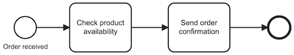
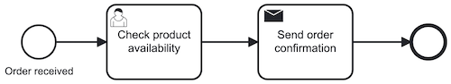
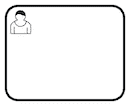
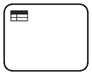
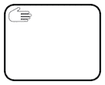
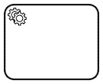
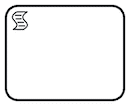
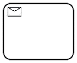

Định nghĩa task type
Đặt tên rõ ràng cho task thôi là chưa đủ để process chạy được - bạn còn phải nói rõ ai, hay cái gì, sẽ thực hiện task đó.

Thử tưởng tượng bạn đang vẽ một quy trình xử lý đơn hàng rất đơn giản: nhận đơn → kiểm tra tồn kho → gửi email xác nhận. Trong Camunda Modeler, bạn kéo hai ô task vào canvas và đặt tên cho chúng, kiểu như "Check product availability" và "Send order confirmation". Nhìn vào diagram này, ai cũng đọc hiểu ngay quy trình đang làm gì - nhưng nếu deploy nguyên xi lên Camunda, process sẽ không chạy được. Vì cái label đó chỉ có ý nghĩa với người đọc, chứ engine thì chịu - nó chưa biết phải "thực hiện" task này bằng cách nào.

Để engine hiểu được, mỗi task cần thêm một thông tin nữa gọi là type. Type trả lời đúng câu hỏi "task này được hoàn thành như thế nào?" - do một người thật sự thao tác, hay do một hệ thống khác (gọi service, gửi message, chạy script...) tự xử lý? Biết được type, bạn (hay developer) mới biết mình cần chuẩn bị phần nào: viết một job worker, dựng form cho người dùng điền, hay thậm chí chẳng cần code gì cả vì engine tự lo hết.
Các loại task
Camunda 8 hỗ trợ khá nhiều loại task, mỗi loại ứng với một cách khác nhau để hoàn thành công việc - có loại cần con người bấm tay, có loại engine tự chạy toàn bộ. Nếu bạn mới học BPMN thì đừng cố nhớ hết một lần; cứ bấm vào từng mục bên dưới, đọc phần "Hành vi khi chạy" để hình dung engine xử lý task đó ra sao.

User task
Mô tả: dùng cho công việc cần một người thật sự thao tác mới xong - ví dụ nhân viên bấm duyệt đơn hàng.
Hành vi khi chạy: khi process instance chạy tới đây, Camunda tạo ra một user task instance rồi dừng lại chờ, giống như vừa có một việc mới xuất hiện trong hộp thư công việc của ai đó. Task này có thể hiện lên trong Tasklist (giao diện có sẵn của Camunda) hoặc một ứng dụng bạn tự viết, tùy vào cách bạn config.

Business rule task
Mô tả: dùng khi cần áp dụng một quy tắc nghiệp vụ để ra quyết định - ví dụ tính mức giảm giá theo hạng thành viên. Quy tắc này thường được mô hình hóa bằng DMN (Decision Model and Notation) thay vì viết code.
Hành vi khi chạy: khi token tới business rule task, decision engine nội bộ tự evaluate decision đó. Có kết quả xong là process instance đi tiếp ngay, không cần chờ ai cả.

Manual task
Mô tả: dùng cho công việc con người làm nhưng nằm ngoài tầm với của engine - ví dụ nhân viên gọi điện xác nhận với khách qua điện thoại bàn. Engine không cần biết ai làm, cũng chẳng có form hay hệ thống nào gắn với nó cả.
Hành vi khi chạy: khi token tới manual task, process instance tự động đi tiếp ngay, không dừng lại chờ gì hết. Với engine, manual task chỉ là một pass-through activity - một trạm đi ngang qua - nên thường được dùng làm placeholder trong lúc implement process.

Service task
Mô tả: dùng cho việc engine tự động giao cho một hệ thống khác xử lý - ví dụ gọi API kiểm tra tồn kho trong kho hàng. Engine không tự làm việc đó, mà delegate cho một IT system khác - có thể là messaging service như Slack, CRM như Salesforce, hoặc một hệ thống bạn tự viết.
Hành vi khi chạy: khi token tới service task, process dừng lại chờ hệ thống bên ngoài xử lý xong rồi mới đi tiếp.

Script task
Mô tả: dùng khi chỉ cần chạy một đoạn logic tính toán nhỏ, không cần gọi hệ thống bên ngoài - ví dụ tính lại tổng tiền đơn hàng sau khi áp mã giảm giá.
Hành vi khi chạy: khi process instance tới script task, Camunda 8 có thể tự evaluate trực tiếp một FEEL expression, không cần code riêng. Nếu logic phức tạp hơn, bạn vẫn có thể dùng job worker cho script task - lúc đó nó hoạt động y hệt service task.
Send task
Mô tả: dùng khi việc cần làm là gửi một message ra ngoài - ví dụ gửi email xác nhận đơn hàng cho khách.
Hành vi khi chạy: khi token tới send task, process instance gửi một message tới hệ thống bên ngoài rồi đi tiếp. Về mặt kỹ thuật, cách implement giống hệt service task.

Receive task
Mô tả: ngược lại với send task - dùng khi process cần dừng lại chờ nhận một message cụ thể, ví dụ chờ webhook báo khách đã thanh toán thành công.
Hành vi khi chạy: receive task tham chiếu tới một message cụ thể, nên process instance sẽ đứng yên tại đây cho tới khi message mong đợi được nhận thì mới đi tiếp.
💡 Bài này chưa nói tới call activity và sub-process - hai loại activity phức tạp hơn hẳn, xứng đáng có một bài riêng.
Undefined task
Có một loại "task type" đặc biệt bạn sẽ gặp ngay từ giây phút đầu tiên mở Camunda Modeler: kéo một task mới vào canvas, mặc định nó chưa được gán type nào cả - Camunda gọi đây là undefined task (hay abstract task). Nói cách khác, bạn mới đặt xong cái tên, còn "ai làm, làm như thế nào" thì vẫn để ngỏ.
- Dùng để vẽ ra công việc do ai đó làm, nhưng nằm ngoài phạm vi mà engine cần quan tâm tới.
- Không gắn với bất kỳ system hay UI nào cả.
- Phù hợp khi bạn đang mô hình hóa một process chưa được tự động hóa, hoặc chưa muốn tự động hóa ngay.
- Có thể dùng tạm như một chỗ giữ vị trí, trong lúc phần automation vẫn đang được xây dựng dần.
Nhìn vào một undefined task, bạn vẫn đọc được nó đang mô tả việc gì qua cái label - chỉ là chưa biết nó sẽ hoàn thành ra sao, vì type chưa được định nghĩa.
Vậy undefined task để làm gì?
Nghe qua có vẻ vô dụng - vì engine sẽ bỏ qua nó khi chạy thật - nhưng nó lại khá hữu ích ở giai đoạn đầu, khi bạn mới phác thảo quy trình. Undefined task giúp bạn nhìn thấy rõ những công việc nằm ngoài phạm vi tự động hóa của process engine, thay vì bị ép phải chốt type ngay từ những bước vẽ đầu tiên.
Vậy có phải lúc nào cũng cần gán type ngay không?
- Không nhất thiết.
- Với một process model mang tính chiến lược (strategic) - tức là vẽ ra chủ yếu để bàn bạc, thống nhất ý tưởng - undefined task xuất hiện khá thường xuyên và hoàn toàn bình thường.
- Undefined task vẫn có thể tồn tại trong model; engine chỉ đơn giản bỏ qua chúng khi thực thi.
- Chúng thường được dùng làm placeholder trong lúc bạn triển khai automation dần từng phần.
Tóm tắt
- Chỉ đặt label thôi thì chưa đủ - muốn process chạy được (executable), bạn phải gán type cho từng task.
- Về mặt kỹ thuật, service task và send task hoạt động giống hệt nhau - cả hai đều implement bằng job worker.
- Manual task và undefined task đều được engine coi là pass-through activity - không làm gì cả, chỉ đi tiếp - nên thường dùng làm placeholder trong lúc implement process.